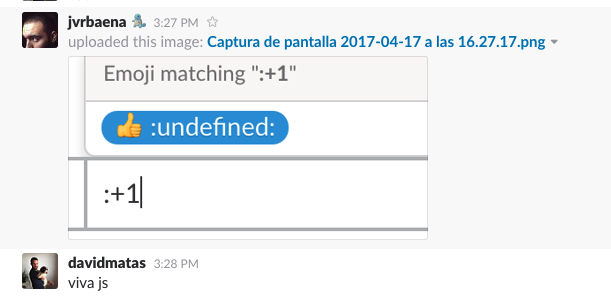

Big JavaScript codebases tend to become "read-only".
One of the reason is the lack of type signature
export const cancelRequests = (requestsActions) =>
compose(
map(endpoint => cancelRequest(endpoint)),
filter(endpoint => !!endpoint),
map(action => action.endpoint),
)(requestsActions);type RequestAction = { type: 'request', endpoint: string};
type CancelAction = { type: 'cancel', endpoint: string };
export const cancelRequests = (requests: RequestAction[]): CancelAction[] =>
compose(
map(endpoint => cancelRequest(endpoint)),
filter(endpoint => !!endpoint),
map(action => action.endpoint),
)(requests);Benefits of using types
#
Benefits
Type systems make code easier to maintain
Types can make code more readable
Types can make code easier to analyse
Types can allow for reliable refactoring
Types can allow for generally better IDE support
Types can catch some (type related) errors early
React's PropTypes
ActivationAccount.propTypes = {
account: PropTypes.shape({
id: PropTypes.number.isRequired,
screenName: PropTypes.string,
name: PropTypes.string.isRequired,
}),
formatNumber: PropTypes.func,
translate: PropTypes.func,
};- Problem: Just for React components. Limited expressiveness.
We are not talking about an “alternative” JavaScript.
(Sorry CoffeScript fans)
Types had bad reputation
public abstract class AbstractSingletonProxyFactoryBean
extends ProxyConfig
implements FactoryBean, BeanClassLoaderAware, InitializingBean {
}Types bad reputation
- Types have a reputation of being unnecessarily ceremonious
- This is not about putting the "Java" back into JavaScript
Behind that Java-like syntax is a language that is every bit as flexible and dynamic as JavaScript because, well, it is JavaScript.
Modern types systems are smarter
Type inference
var foo = 123;
foo = '456'; // Error: cannot assign `string` to `number`Structural typing
- Duck typing is a first class language construct
If it looks like a duck and quacks like a duck, it's a duck
interface Point2D {
x: number;
y: number;
}
interface Point3D {
x: number;
y: number;
z: number;
}
var point2D: Point2D = { x: 0, y: 10 }
var point3D: Point3D = { x: 0, y: 10, z: 20 }
function iTakePoint2D(point: Point2D) { /* do something */ }
iTakePoint2D(point2D); // exact match okay
iTakePoint2D(point3D); // extra information okay
iTakePoint2D({ x: 0 }); // Error: missing information `y`Types can help us with problems we have every day.
Nullability

function foo(num) {
if (num > 10) {
return 'cool';
}
}
const fooed = foo(9);
fooed.toString();Uncaught TypeError: Cannot read property 'toString' of undefined
function foo(num: number) {
if (num > 10) {
return 'cool';
}
}
const fooed: string|void = foo(9);
if (fooed) {
fooed.toString();
}TypeScript vs Flow
Typescript
- Its a superset of javascript
- By Microsoft
- Ease of use and tool support over soundness
- Based on ES6 (probably ES7/ES8)
- Adds optional type annotations, visibility, and decorators
- Compiler checks and transpile to ES3/ES5/ES6
- 2.x with major changes released recently
Flow
- Its a superset of javascript
- By Facebook
- No runtime exceptions as goal
- Not a compiler, but checker
- Type annotations can very easily be removed by babel for runtime
TypeScript vs Flow
ES6/7 features available in typescript
- arrow functions
- default parameters
- object spread
- async/await
- generators
- property initializators
Real life code
React example
type DefaultProps = { prop: string };
type Props = { prop: string };
type State = { prop: string };
class MyComponent extends React.Component<DefaultProps, Props, State> {
static defaultProps = { prop: "foo" };
state = { prop: "bar" };
button: HTMLButtonElement;
onMouseEvent(event: MouseEvent) {
// ...
}
componentDidUpdate(prevProps: Props, prevState: State) {
// ...
}
render() {
return <button ref={el => this.button = el}>Toggle</button>;
}
}Redux example
Redux: State
type State = {
users: Array<{
id: string,
name: string,
age: number,
phoneNumber: string,
}>,
activeUserID: string,
// ...
};Redux: Action creator
type FooAction = { type: "FOO", foo: number };
type BarAction = { type: "BAR", bar: boolean };
type Action = FooAction | BarAction;
function foo(value: number): FooAction {
return { type: "FOO", foo: value };
}
function bar(value: boolean): BarAction {
return { type: "BAR", bar: value };
}Redux: Reducer
function reducer(state: State, action: Action): State {
switch (action.type) {
case "FOO": return { ...state, value: action.foo };
case "BAR": return { ...state, value: action.bar };
default: return state;
}
}Migration example: Slack
Migration: Gradual typing
JavaScript is valid TypeScript, meaning that one can use TypeScript without changing a single line of code. This allowed us to use “gradual typing” by enabling the compiler and the static analysis early, without suspending work on critical bug fixes or new features.
Migration: Found existing bugs
First, we were surprised by the number of small bugs we found when converting our code
Migration: Tooling
Second, we underestimated how powerful the editor integration is. Thanks to TypeScript’s language service, editors with an autocomplete function can support the development with context-aware suggestions. TypeScript understands which properties and methods are available on certain objects, enabling your editor to do the same. An autocomplete system that only uses words in the current document feels barbaric afterward.
Migration: Duration
It’s taken about six months to annotate most of the JavaScript in the desktop app code base.
Migration: Developers training
Developers who have experience using any strongly-typed language usually pick up the syntax within an hour or two
Conclusion
Should you use a type checker?
- your project does not live for long: no
- your project is really simple: no
- there is a chance you will need to refactor the thing: yes
- your system is very important or even crucial for the success of your company: yes
- people enter or leave your team frequently: yes
- you have substantial amount of algorithmic code: yes
http://djcordhose.github.io/flow-vs-typescript/elm-flow-typescript.html#/49
After having used TypeScript for nearly a year, I have to confess: I never want to start a new project without it again.
Tom Dale
https://medium.com/@tomdale/glimmer-js-whats-the-deal-with-typescript-f666d1a3aad0